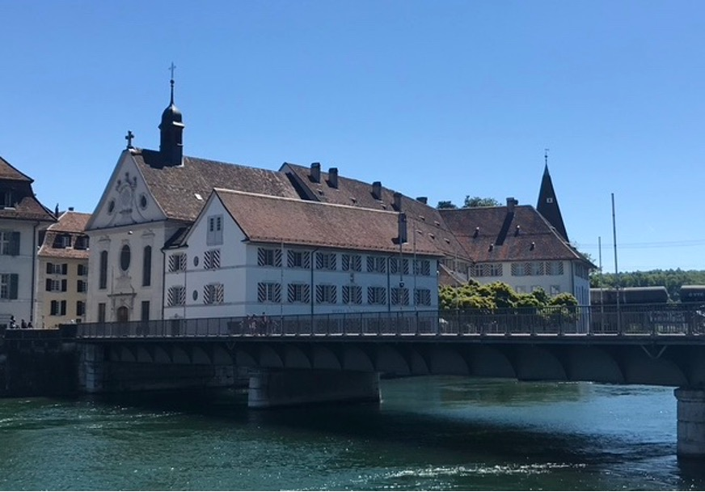

Ihr Standort in der «minderen Stadt»
Das Stadtbild von Solothurn wird durch viele Kirchen geprägt. Eine davon steht auf der rechten Seite der Aare in der Vorstadt: die Spitalkirche. Spätestens im 13. Jahrhundert entstand auf der bereits zu römischer Zeit besiedelten Südseite des Flusslaufs eine befestigte Brückenkopfsiedlung, die mindestens seit 1350 als «mindron stat», im Gegensatz zur linksufrigen «meron stat» bezeichnet wurde. Die mindere Stadt war die Stadt des einfachen Volks, hier wohnten und arbeiteten in erster Linie Handwerkerfamilien. Hier standen zahlreiche Gaststätten mit angrenzenden Stallungen und Scheunen, damit die Reisenden mitsamt ihren Pferden Unterschlupf finden konnten. Im 18. Jahrhundert wurde zudem ein Waisenhaus, ein Gefängnis und ein Arbeitshaus in der Vorstadt errichtet. In Arbeitshäusern brachte man seit Mitte des 16. Jahrhunderts zunehmend die Armen (z.B. Bettelnde, Waisenkinder, Menschen mit Handicap) unter, um sie dort zur Arbeit zu erziehen.
Das Spital als Zufluchtsstätte
Das Spital war früher nicht in erster Linie ein Krankenhaus, sondern wie der Begriff «Hospitale» andeutet, ein Haus der Gastfreundschaft für Fremde, für Kriegsflüchtlinge, für Hilfsbedürftige und für Pilgernde. Die Lage an der Durchfahrt von Bern nach Basel und an der schiffbaren Aare ideal war. Spitäler wurden meist auch aus Gründen der Hygiene vor dem Stadttor, an einem fliessenden Gewässer errichtet. Das Spital war ebenso für bedürftige Einheimische Zufluchtsstätte: Menschen, deren Haus abgebrannt war, Waisen, Behinderte, arme Wöchnerinnen, Bettlerinnen und Bettler; auch «Geisteskranke» (wie man sie damals nannte) wurden im Spital verwahrt oder Gefangene vorübergehend einquartiert. Das Spital verteilte an seinem Tor Almosen und lieferte Essen ins Haus verarmter Menschen. Es war von Beginn weg Anlaufstelle für Kranke. Behandlungen von Knochenbrüchen, Amputationen und Schädeltrepanationen wurden durch den Schärer (den Coiffeur) durchgeführt; Menschen mit Epilepsie, Augenleiden oder mit ansteckenden Krankheiten suchten Hilfe bei heilkundigen Frauen, Hebammen unterstützten Frauen bei ihrer Niederkunft. Ab dem 15. Jahrhundert wurde das Spital durch Menschen, die ihre Pfrund kauften, zunehmend als Altersheim genutzt. Die Pfrund war eine Schenkung an das Spital, die je nach Vermögen unterschiedlich hoch ausfiel und den Pfründern lebenslange Kost, Logis und Pflege sicherte. Die «Muoss- und Brottpfründer» bewohnten einen gemeinsamen Raum und wärmten sich an einem gemeinsamen Feuer, während die «Herrenpfründer» Einzelzimmer belegten und täglich Fleisch vorgesetzt bekamen. Die Pfründe waren neben den Spenden wichtige Einkommensquellen des Spitals.
Die Anfänge des «Alten Spitals»
1296 wurde in der Vorstadt, am Standort der Spitalkirche, erstmals ein Spital urkundlich bezeugt, das durch die Bürgerschaft betrieben wurde. Um diese Zeit wurde das bis dahin kirchlich geführte Spitalwesen landauf und landab kommunalisiert, wobei die Spitäler sakrale Orte waren und blieben. Die zahlreichen bürgerlichen Spitalgründungen dieser Zeit waren einerseits durch die einflussreiche Bewegung der Bettelorden inspiriert (um 1280 liessen sich im Nordosten der Stadt Solothurn in einem damals noch unbebauten Gebiet die Franziskaner nieder) und andererseits eine Reaktion auf die zunehmende Massenarmut infolge von Krieg, Seuchen, Naturkatastrophen, Bevölkerungswachstum und dem Übergang von der Natural- zur Geldwirtschaft. Armut war in der mittelalterlichen Vorstellung, trotz Überbleibseln negativer Wahrnehmung aus der Antike, positiv konnotiert. Freiwillige Armut in der Nachfolge Christi wurde durch die Armutsbewegung idealisiert. Zudem hatten die Armen als Almosennehmende eine Funktion für die Reichen, denn die als Gegenleistung erbrachten Gebete für das Seelenheil ihrer Gönnerschaft galten als besonders wirkungsvoll. Die Anzahl der Armen explodierte im Spätmittelalter infolge von Krieg, Missernten, Epidemien und vor allem auch infolge des starken Bevölkerungswachstums. Die Reformation brachte eine Aufwertung der Arbeit mit sich, die das mittelalterliche Ideal der Kontemplation verdrängte. Es kam in der Folge zu einer Umdeutung der Armut, was sich darin zeigte, dass man nun mit der Kategorisierung der Armen in Unterstützungswürdige und Unterstützungsunwürdige begann. Freiwillig Arme, Fremde und solche, deren Armut man als selbstverschuldet ansah, wurden von der Fürsorge ausgeschlossen und zunehmend stigmatisiert.
Blick auf die Spitalkirche in der Vorstadt, vom anderen Aareufer aus aufgenommen. (Bild: Deborah Finger-Oppliger)
Ein Spital mit integrierter Kapelle
Um 1418 initiierte die Bürgerschaft den Neubau des Spitals mitsamt einer Kapelle mit Glocke. Gegen den Widerstand des St.-Ursen-Stifts erhielt die Kapelle das Kaplaneirecht, doch erst um 1749 einen eigenen Spitalpfarrer, der von da an für die tägliche Messe und den Seelsorgedienst zuständig war. Ab 1761 verkündete die Totenglocke den Tod aller Menschen, die in der Vorstadt starben und nicht mehr nur jenen der Hospitalisierten. Die Spitalkirche erhielt insbesondere als Seelsorgezentrum für die Leute der Vorstadt identitätsstiftende Bedeutung, was sich bis heute z.B. in einem Kirchweihfest zum St.-Margarithen-Tag, der jährlichen «Kilbi», niederschlägt. Früheste Darstellungen der Kapelle lassen vermuten, dass es sich zuerst um einen Krankensaal mit eingebauter Kapelle handelte. Spätestens um 1702 wurde die Kirche wahrscheinlich vom Krankensaal abgetrennt.
Neubau der Spitalkirche
Ein Feuer richtete um 1734 grossen Schaden an, so dass ein Neubau der Kirche nötig wurde, der mit einem Umbau des Spitals einherging. Der Architekt des Burgerspitals in Bern, Josef Abeille (1673–1756), wurde mit der Planung und der Solothurner Werkmeister Peter Josef Frölicher (1698–1768) mit der Bauleitung beauftragt. Die Neuerrichtung und Ausstattung der Kirche wurden bis 1742 fertiggestellt. Sie ist seither als unabhängiger Bau im Winkel zwischen dem späteren direkt nördlich an die Aare grenzenden Schwesternhaus und dem östlich angrenzenden Spitalgebäude zu erkennen. Eine Ostempore verbindet den Innenraum der Kirche mit dem Schwesternhaus und die seitlichen Westemporen gewährleisten die Verbindung zum ehemaligen Krankensaal des Spitals, so dass den Kranken die Teilhabe am Gottesdienst erleichtert wurde. Die zweistöckige Anlage der Fenster erinnert bis heute an die hohen Lüftungsfenster des Krankensaals vor dem Neubau. Die Darstellung des Pfingstereignisses auf dem Hauptaltargemälde gibt der Spitalkirche den Beinamen «zum Heiligen Geist».
Die Spitalschwestern
Das Spitalwesen wurde gegen Ende des 18. Jahrhunderts zunehmend neu organisiert. Die Multifunktionalität der Spitäler als Armenfürsorgeanstalt wurde umstrukturiert, so dass man vermehrt die Kranken in den Spitälern unterbrachte und die anderen Hilfsbedürftigen in je eigenen spezialisierten Einrichtungen versorgte. Im Zuge dieser Umstrukturierungen wurden die Krankenpflege und Haushaltsführung auch in Solothurn um 1788 an eine Spitalschwesterngemeinschaft übertragen. Die Schwestern nannten sich die «Töchter Unserer Lieben Frau von den Sieben Schmerzen» und sie orientierten sich an den Grundregeln des durch Nicolas Rolin und Guigogne de Salin um 1443 gegründete Hôtel-Dieu im französischen Beaune. Die Kirche diente nun den «soeurs grises», wie sie aufgrund ihrer Ordenstracht auch genannt wurden, als Gebetsstätte. Bis zum Verbot von Kirchbestattungen um 1921, wurden die Schwestern in der Kirche begraben, woran der Bodenbelag aus Grabplatten im Kirchenschiff und die Namenslisten an der Südwand bis heute erinnern. Die Schwestern professionalisierten den Spitalbetrieb und etablierten eine Apotheke, die heute noch aussergewöhnlich gut erhalten ist und seit Juni 2021 nach drei Standortwechseln wieder am ursprünglichen Standort des Alten Spitals besichtigt werden kann.
Verzeichnis der Schwestern, die in der Spitalkirche begraben wurden. (Bild: Deborah Finger-Oppliger).
Die Spitalkirche heute als Anfrage an uns
Um 1930 wurde der Spitalbetrieb zwecks einer Modernisierung ins neue Bürgerspital in Schöngrün verlegt. Auch die Spitalschwestern zogen nach Schöngrün. Das ehemalige Spital wurde unterschiedlich zwischengenutzt und dient seit den 1980er Jahren als Zentrum für Kultur, Soziales und Seminare. In der Kirche werden heute hauptsächlich Amtshandlungen der Pfarrei St. Ursen und St. Marien durchgeführt. Die Grabplatten am Boden des Kirchenschiffs und die Namenslisten der Spitalschwestern laden dazu ein, ihnen ein Ohr zu leihen. Anlässlich des 225-Jahre-Jubiläums erinnerte die Frau Mutter Regula Scheidegger daran, dass der Gottesdienst und der Dienst an den Armen zusammengehören. Während die kranken Menschen für die Schwestern im Mittelpunkt gestanden seien, sei auch Gott mitten unter ihnen gewesen (veröffentlicht am 30.12.2013 von Marc A. Herzig in der Solothurner Zeitung).
Der Balkon mit direktem Anschluss zum ehemaligen Krankensaal. (Bild: Deborah Finger-Oppliger). Rundsicht
Deborah Finger ist Theologiestudentin im Bachelor an der Universität Bern
Weitere Artikel von {{ author.author }} finden Sie hier:
Zur Vertiefung:
- Ferdinand Schubiger: «Aus der Geschichte des Bürgerspitals Solothurn», in: Jahrbuch für solothurnische Geschichte, Heft 1, Solothurn 1928, 231-254.
- Johanna Strübin/Christine Zürcher: Die Stadt Solothurn III. Sakralbauten (Die Kunstdenkmäler der Schweiz 4), Bern 2017.
- Christine Zürcher/Claudia Hermann/Peter Keller/Ursula Hinter-Trüb: Das Alte Spital und die Spitalapotheke in Solothurn, Schweizerische Kunstführer, Gesellschaft für Schweizerische Kunstgeschichte GSK, Bern 2021.
Weitere Artikel von {{ author.author }} finden Sie hier: